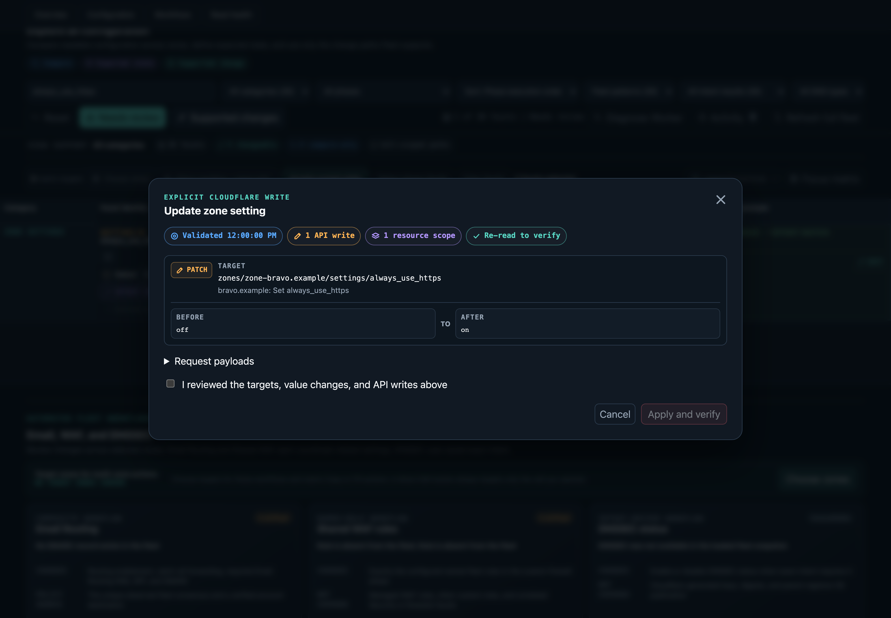

IDENTITY
Authenticate twice
Access enforces the application policy at the edge. The Worker still verifies the assertion signature, issuer, and application audience before serving an asset or API response.
Security
Fleet is an operator tool with meaningful authority. Its design keeps Cloudflare credentials out of browser JavaScript, constrains every proxied endpoint, and treats a mutation as a reviewed and verified state transition.
Security principles
IDENTITY
Access enforces the application policy at the edge. The Worker still verifies the assertion signature, issuer, and application audience before serving an asset or API response.
CAPABILITY
The hosted proxy accepts only Fleet's inventory and supported-write shapes. Account identifiers are fixed by configuration, and zone writes require ownership verification.
MUTATION
Every supported write depends on a fresh read and displays targets, before and after values, methods, endpoints, and payloads before execution.
Human checkpoint
A confirmation is rebuilt from live state and cannot execute until the operator checks the explicit review acknowledgement. The screenshot uses only synthetic .example data.

Trust boundaries
| Layer | Receives | Authority | Primary controls |
|---|---|---|---|
| Browser application | Rendered inventory, intent, activity, read-only flag, and a backend location or local session capability | Can request allowed backend operations but has no Cloudflare credential | Same-origin transport, no remote scripts, no credential persistence, explicit confirmation |
| Cloudflare Access | User identity and application policy | Allows or denies access to the hosted hostname | Identity provider, Allow policy, application session, edge enforcement |
| Hosted Worker | Access assertion, account boundary, encrypted API token, D1 binding, read-only mode | Can serve Fleet, persist Fleet documents, and call allowlisted Cloudflare API shapes | JWT verification, same-origin mutation check, bounded bodies and duration, no redirects, path allowlists, zone ownership checks |
| Local broker | API token, account ID, random session secret, private runtime and state paths | Equivalent Fleet reads and writes for one local session | Loopback binding, random capability, origin checks, private file modes, liveness-bound cleanup |
| Local CLI or MCP process | API token, account ID, selectors, planning digests, and explicit state paths | Can audit, plan intent alignment, execute supported alignment writes, and read local activity | Named operations, no raw API passthrough, single or batched digest binding, fresh replanning, throttle-aware reads, serialized writes, and protocol confirmation for MCP |
| Cloudflare D1 or local state | Inventory snapshots, desired state, acknowledgements, and operation journal | Persists configuration evidence but no Cloudflare API token | Schema validation, account scoping, revisions, transactions or atomic file locks |
The Worker expects the Cloudflare API token only as a secret binding. Wrangler variables hold the account ID, D1 binding, Access issuer and audience, read-only flag, and validated operator policy, but never the credential. Static assets are built from the browser dependency graph and pass through the Worker before they are served.
For production requests, missing or invalid Access assertions fail closed. The implementation uses the assertion header recommended by Cloudflare and verifies the signing key, issuer, and audience through jose. Cloudflare explains why the origin must validate the token in Validate JWTs.
The Cloudflare proxy rejects paths outside its read and write allowlists before attaching the secret. It refuses upstream redirects, bounds request bodies and upstream duration, scopes account reads to the configured account, and confirms zone ownership before forwarding a zone write. Setting FLEET_READ_ONLY=true rejects Cloudflare writes plus intent and activity mutations at the backend, not just in the interface.
A normal local launch binds a temporary broker only to 127.0.0.1 on a random port. The token moves into the broker through a mode-restricted startup file that is consumed before readiness. The browser receives a random, timing-safe session capability in its generated bootstrap script. Requests also enforce the expected origin and same-site browser context.
The launcher opens the regular browser profile without a DevTools port or weakened cross-origin security. Debug mode is deliberately different: it uses a disposable profile, permits direct browser-to-Cloudflare traffic, and exposes a loopback DevTools endpoint. Do not browse unrelated sites in that debug window.
Local state and cache records contain the account configuration shown by Fleet. They are sensitive even though they contain no API token. Keep ignored state and policy files private, protect workstation backups, and use an explicit absolute state path when separating accounts.
The CLI and MCP server are direct local processes, not browser clients. They inherit the API token and account identifier, so the process, its parent agent, and the host environment can exercise every Cloudflare permission granted to that token. Run them only for trusted local clients and keep secrets out of tracked or shared MCP configuration.
The MCP transport is stdio-only and opens no network listener. Tool inputs and outputs never include the API token, protocol frames stay on stdout, and diagnostics stay on stderr. Its named tools expose audit, intent alignment, and activity operations without accepting arbitrary Cloudflare methods or paths.
The CLI apply command is intentionally noninteractive: the calling workflow must present the full plan and obtain operator approval before supplying its digest. MCP apply adds protocol-level input elicitation. Its authenticated, method-bound, short-lived request state binds the account, selector or selector batch, and digest; the displayed plan requires one explicit approval; and a fresh plan must still match before execution. A short-lived baseline cache is accepted only for the same intent revision, and every preparation still rereads fleet membership and the selected live surfaces. HTTP 429 responses delay bounded GET retries according to Retry-After; an exhausted throttle fails the inventory operation, and mutation requests are never automatically retried.
Scope the Cloudflare API token to the minimum accounts, zones, and permissions required for the intended workflow. Fleet's proxy and review model add controls, but the underlying token remains the ultimate Cloudflare capability.
Do not publish state.json, fleet-policy.json, wrangler.jsonc, .dev.vars*, .env*, Playwright traces, live screenshots, or audit reports. Those artifacts can contain account identifiers, domains, configuration, intended state, operation evidence, or secrets. The repository ignores them, and npm run check:publication rejects the operator file names from a publication tree.
The committed product screenshots are generated through the local deterministic fixture. They contain only reserved .example hostnames, documentation IP addresses, synthetic settings, and a literal fake API token that never leaves the test broker.
Do not open a public issue for a suspected vulnerability. Follow the private reporting instructions in SECURITY.md and include the affected boundary, reproduction steps, impact, and any proposed mitigation. Do not include live API tokens or private fleet data.
Safe first deploy
Validate Access, account scope, and inventory before opting into writes.